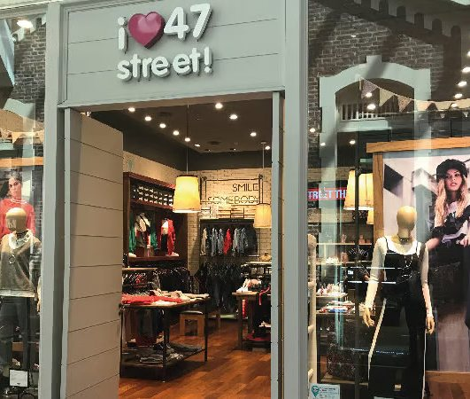

Una estética Y2K, moda circular y línea genderless: Cómo es el nuevo rostro de 47 Street
Nació en 1986 para vestir a las adolescentes. Cómo combina locales propios, franquicias y socios en la región, y por qué renueva su estética en cada temporada.
Nació en 1986 para vestir a un público que el mercado ignoraba: las adolescentes. Cuatro décadas después, 47 Street combina locales propios, franquicias y socios en la región, y renueva su estética con cada temporada.
47 Street es una de las marcas de moda juvenil más reconocidas de Argentina. Fue fundada en Buenos Aires en 1986 y, según Modaes, es la mayor empresa argentina de moda especializada en el segmento teen, con sede en el barrio porteño de Villa Crespo. ¿Cómo hace una marca para sostenerse durante 40 años frente a un público que cambia todo el tiempo? Esta nota analiza los pilares de su negocio.
Un nicho que nadie atendía
Según la historia de la marca que recoge Notilook, 47 Street surgió por una necesidad del mercado: las adolescentes se vestían con el talle más chico de ropa de dama o con el más grande de ropa de niñas. La empresa detectó ese vacío y propuso una marca pensada para esa edad. Desde la mirada económica, es un ejemplo de segmentación: elegir un público específico y diseñar toda la oferta alrededor de él.
Locales propios, franquicias y socios en la región
El modelo combina tiendas propias y franquicias. En 2022, Infobae informó que la marca tenía 20 locales propios en los principales shoppings del país y más de 150 franquicias en el interior. Según El Cronista, el sistema de franquicias le da al franquiciado el know how de una marca exclusiva y a la empresa un contacto continuo con el consumidor final.
Fuera de Argentina, la expansión se apoyó en socios locales. En Perú, por ejemplo, la marca opera de la mano del fondo de inversión Faro Capital, que tiene la licencia en ese país, según Peru Retail. Modaes también la ubica en Chile, Paraguay, Uruguay y Ecuador. En términos económicos, un esquema de licencia o franquicia permite crecer con menos capital propio.
Una estética que se renueva con cada temporada
La marca organiza cada colección en líneas de tendencia. En invierno de 2022 presentó “Wanderlust”, con cuatro líneas, entre ellas “Functional Future”, de estilo urbano y descontracturado, descripta como agender. En su colección de verano 2023, “Summer Arcade”, sumó una línea Y2K con baby tees, minis de tiro bajo, parachute pants y baggy jeans, inspirada en los videojuegos de los 90 y la música de los 2000.
También recurre a las colaboraciones. Entre ellas hubo una cápsula con la cantante Lali y otra con la diseñadora e influencer Mich Kogan. La empresa tiene además una segunda marca, Mich Kogan, dirigida a una consumidora de mayor edad, lo que le permite acompañar a su público cuando crece.
La tienda como parte del producto
Los locales se renuevan junto con el público. Al presentar su temporada primavera-verano 2023, la marca reabrió un local en Alto Rosario con una imagen de neones y fluorescentes, y un evento de videojuegos alineado con la campaña “Summer Arcade”. El 8 de agosto de 2025 inauguró en Mendoza Plaza Shopping un local de 110 metros cuadrados, el más grande de la marca en la provincia y con su imagen más reciente.
Cultura pop como motor de marca
47 Street construyó identidad a través de la cultura juvenil. Según su ficha de franquicias, vistió a elencos de series adolescentes como Rebelde Way y Casi Ángeles. Además, entre 2002 y 2008 tuvo a la actriz Luisana Lopilato como cara de sus campañas, de acuerdo con Wikipedia. La marca se convirtió así en parte del universo de referencia de toda una generación.
Los desafíos hacia adelante
La marca opera en un mercado exigente. La actividad textil argentina cayó 22,6% en los primeros siete meses de 2026 y las importaciones de prendas crecieron 53,5% hasta agosto, según FITA. A eso se suman gustos juveniles que cambian rápido y el avance de la ropa de segunda mano. Sostener un negocio de moda joven en ese contexto exige renovar la propuesta con frecuencia, algo que 47 Street viene haciendo en sus colecciones y en sus locales.